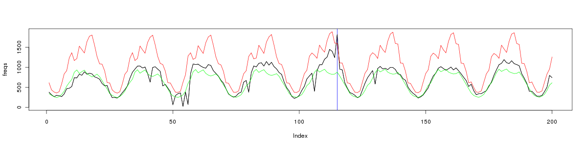
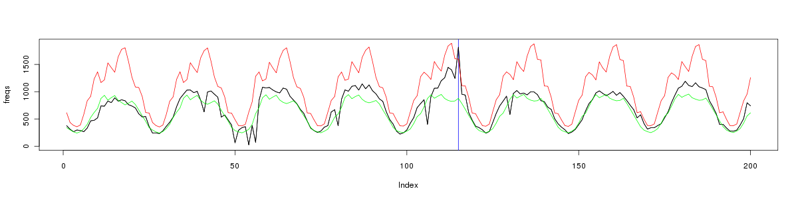

blog notes
-- what does it mean
what does trending mean;
- the frequency of event in some time period outside normal
- c.f. outliers
- two images; one of smooth trend up, one with salt and pepper noise
-- the data
tweets about cheese for a period 20100125_2010022;
436e3 entries / 27days
=> 16e3 a day
extract tweet text (these gzips are full of partial records thus thou shalt redirect json parsing to dev null)
(see run.sh)
first of all how many tweets per hour over this time? (678 entries)
 what trending can we do on this timeseries?
how do we decide give a new value whether it respresents a trend?
TODO: REMOVE OUTLIERS!!!
1. mean and std dev
one simple way is compare the value to the historical mean. to make the comparison robust to
normal flucuenation we compare to mean +/- 2x std dev
what trending can we do on this timeseries?
how do we decide give a new value whether it respresents a trend?
TODO: REMOVE OUTLIERS!!!
1. mean and std dev
one simple way is compare the value to the historical mean. to make the comparison robust to
normal flucuenation we compare to mean +/- 2x std dev

 2. mean and std dev; compared to this time in previous days
split the time series up into a time series per 15min chunk of the day
makes each time series much smoother; but not as good at predicting the overall trend.
perhaps this needs to be more than 2x the std dev??
it's getting trends on the downways slope. this is ok (?)
2. mean and std dev; compared to this time in previous days
split the time series up into a time series per 15min chunk of the day
makes each time series much smoother; but not as good at predicting the overall trend.
perhaps this needs to be more than 2x the std dev??
it's getting trends on the downways slope. this is ok (?)

 how about with a sliding window, with as little as 10 previous numbers?
suprisingly, not too different. i guess this indicates that compared
to same time of day the data is quite stable.
how about with a sliding window, with as little as 10 previous numbers?
suprisingly, not too different. i guess this indicates that compared
to same time of day the data is quite stable.
 
3. per terms
break down in terms in 1/2/3 grams
250e3 uniq 1grams; 64% of which are uniq
1.3e6 uniq 2grams; 75% of which are uniq
2.1e6 uniq 3grams; 86% of which are uniq
------------------------------------
how can we notice when whether the direction has changed? is this stable?
how does this look per 15 min over the day?
img tweets_over_day.15.png
how does this look per hour over a week?
img tweets_over_week.1.png
how does this relate to the daily nature of the data? ie compare to same time a day ago?
how does this relate to the week nature of the data? ie compare to same time a week ago?
how do we do this per term?
how do we do this in pig?
# todo
approaches
- is there enough variance to bother comparing to this time yesterday / last week
- mean of value +/- 2 stddevs...
simple version first
- build model based on a range of data, say last 20 chunks
- compare new chunk to mean +/- 2 std dev from chunks
- how to calculate mean/stddev in pig?
- do in ruby first to ensure we know what we're doing first...

3. per terms
break down in terms in 1/2/3 grams
250e3 uniq 1grams; 64% of which are uniq
1.3e6 uniq 2grams; 75% of which are uniq
2.1e6 uniq 3grams; 86% of which are uniq
------------------------------------
how can we notice when whether the direction has changed? is this stable?
how does this look per 15 min over the day?
img tweets_over_day.15.png
how does this look per hour over a week?
img tweets_over_week.1.png
how does this relate to the daily nature of the data? ie compare to same time a day ago?
how does this relate to the week nature of the data? ie compare to same time a week ago?
how do we do this per term?
how do we do this in pig?
# todo
approaches
- is there enough variance to bother comparing to this time yesterday / last week
- mean of value +/- 2 stddevs...
simple version first
- build model based on a range of data, say last 20 chunks
- compare new chunk to mean +/- 2 std dev from chunks
- how to calculate mean/stddev in pig?
- do in ruby first to ensure we know what we're doing first...